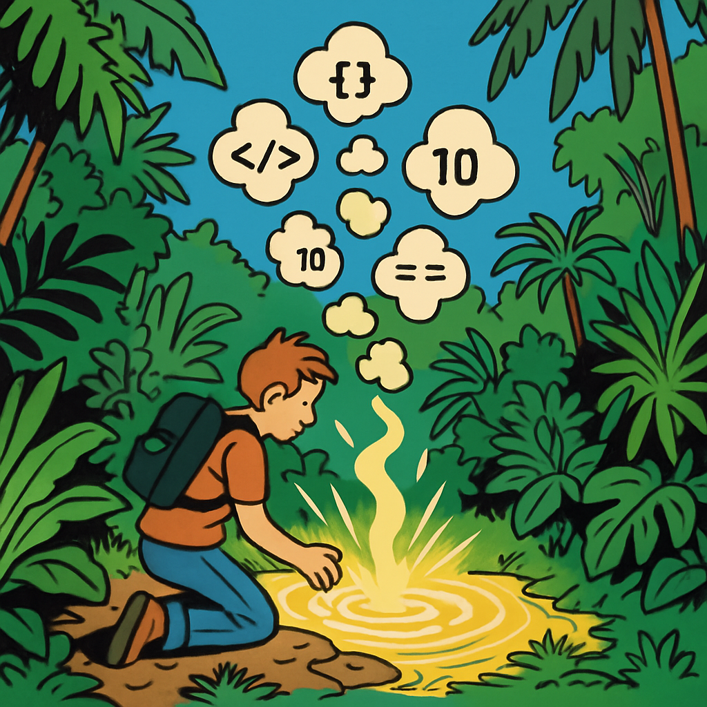

Microlearning
«Die Cloud» klingt leicht und unsichtbar. In Wirklichkeit besteht sie aus riesigen Rechenzentren, die enorme Mengen an Strom und Wasser (zur Kühlung) verbrauchen.

Jede Datei, die du speicherst, jedes Video, das du streamst, jedes Backup, das synchronisiert wird, hat einen Energiepreis:
- 1 Stunde HD-Streaming verbraucht ca. 1.5–3 kWh Infrastruktur-Energie
- Eine E-Mail mit 5 MB Anhang verursacht rund 50g CO₂ (inkl. Server-Speicherung und Redundanz)
- Cloud-Anbieter speichern deine Daten typischerweise 3-fach redundant an verschiedenen Standorten
In der Schweiz nutzen viele Unternehmen Hyperscaler wie AWS, Azure oder GCP. Einige dieser Anbieter betreiben Rechenzentren in Zürich und Umgebung.
Tat / Einstellung
Räume deinen Cloud-Speicher auf und überprüfe deine Synchronisierungen.
Aufgabe 1: Aufräumen
- Öffne deinen Cloud-Speicher (OneDrive, Google Drive, iCloud oder Dropbox)
- Sortiere nach Dateigrösse
- Lösche oder archiviere mindestens 3 Dateien, die du nicht mehr brauchst
Aufgabe 2: Sync prüfen
- Überprüfe deine automatischen Backups und Synchronisierungen
- Welche Ordner werden synchronisiert?
- Brauchst du wirklich alles in der Cloud?
Reflexion
Wenn Cloud-Speicher kostenlos und unbegrenzt wäre – würdest du dein Verhalten ändern? Was sagt das über die Verbindung zwischen Kosten und Nachhaltigkeit?
Kostenlos heisst nicht ressourcenfrei. Die Kosten werden nur woanders bezahlt – durch Energie, Rohstoffe und CO₂. Wenn etwas «gratis» ist, fehlt oft das Signal, das uns zum bewussten Umgang motiviert.
Challenge
Finde heraus, in welcher Region dein Cloud-Anbieter deine Daten speichert. Nutzt dieses Rechenzentrum erneuerbare Energie?
Tipp: Suche nach dem «Sustainability Report» deines Anbieters (z.B. «Microsoft sustainability report» oder «Google environmental report»).